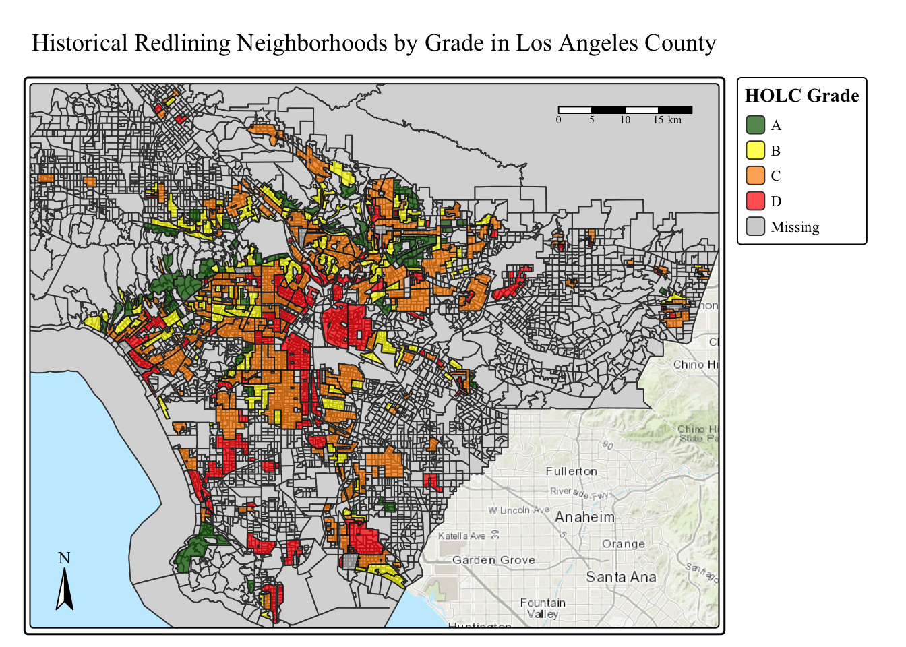
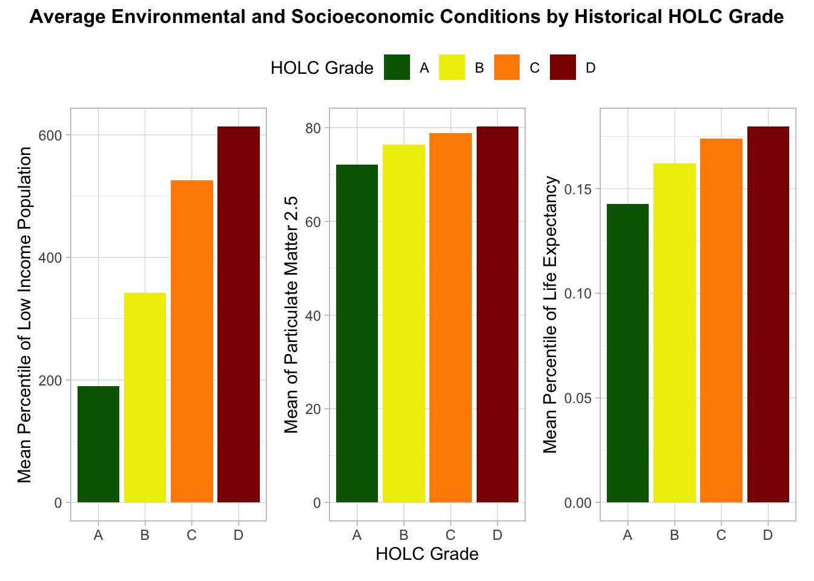
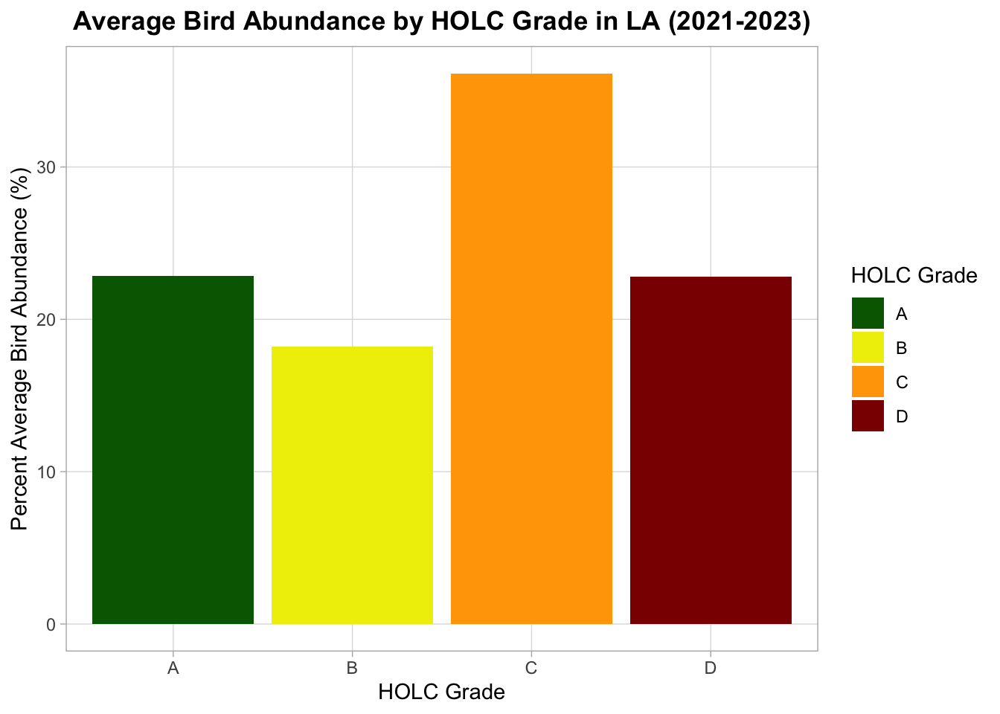

library(tidyverse)
library(tmap)
library(here)
library(sf)
library(spData)
library(kableExtra)
library(patchwork)Exploring Patterns of Environmental (In)Justice in Los Angeles County
Learning outcomes
Build effective, responsible, accessible and aesthetically-pleasing maps
Practice manipulating vector and raster data to build multi-layer maps
Practice making maps in R, specifically using tmap
ST_JOIN: combines information, taking in the highest order of geometry (points, polygon,) will change and dataframe spatially enabled- they now have geometries, they both still have dataframe
Loading Packages/ Libaries Needed for this project
Reading in Data-
# `here()` starts at /Users/marietolteca/Documents/MEDS/EDS-223L/EDS223-HW
# here()
# EJ Screen
ej_df <- st_read(here('data','ejscreen','EJSCREEN_2023_BG_StatePct_with_AS_CNMI_GU_VI.gdb'),
# Adding quiet = TRUE, hides message
quiet = TRUE)
# LA Bird
birds <- st_read(here('data/gbif-birds-LA/gbif-birds-LA.shp'), quiet = TRUE)
#Mapping Inequalities in LA
HOLC <- st_read(here('data/mapping-inequality/mapping-inequality-los-angeles.json'), quiet = TRUE)Filtering EJ screen data to only LA
# subset to the features in LA County
la_ej<- ej_df %>%
filter(CNTY_NAME == "Los Angeles County")Part 1: Legacy of redlining in current environmental (in)justice
Exploring historical redlining in Los Angeles and its legacy on present-day environmental justice.
Data Exploration
# Viewing Class and Geometry Type
class(birds)
unique(st_geometry_type(birds))
names(birds)
# LA EJ Screen data
class(la_ej)
unique(st_geometry_type(la_ej))
names(la_ej)
# HOLC data
class(HOLC)
unique(st_geometry_type(HOLC))
names(HOLC)
st_crs(birds) # User input: WGS 84
st_crs(HOLC) # User input: WGS 84
st_crs(la_ej) # User input: WGS 84 / Pseudo-Mercator
#head(map_in)Checking CRS & Transformation:
Using warning messages then transforming data.
# Checking transformation
if(st_crs(la_ej) != st_crs(birds)){
warning("coordinate reference systems do not match :(")
}Warning: coordinate reference systems do not match :(# Transformation
birds <- st_transform(birds, crs = st_crs(la_ej))
# Checking if transformation worked
if(st_crs(la_ej) == st_crs(birds)){
warning("coordinate reference systems MATCH :)")
}Warning: coordinate reference systems MATCH :)# Comparing CRS
if(st_crs(la_ej) != st_crs(HOLC)){
warning("coordinate reference systems do not match :(")
}Warning: coordinate reference systems do not match :(# Transformation
HOLC_in <- st_transform(HOLC, crs = st_crs(la_ej))
# Checking if transformation worked
if(st_crs(la_ej) == st_crs(HOLC_in)){
warning("coordinate reference systems MATCH :)")
}Warning: coordinate reference systems MATCH :)Creating a map of historical redlining neighborhoods, including:
Explore historical redlining in Los Angeles and its legacy on present-day environmental justice.
# EJ screen- add the polygons to shape the rest of the area
LA_historical_reds <-
tm_shape(la_ej)+
tm_polygons()+
# Adding HOLC DATA
tm_shape(HOLC_in,
# Plot mapping inequalities last, but set as main shape
is.main =TRUE) +
tm_polygons(col = "grade",
fill_alpha = 0.7,
# Selecting Colors
palette = c("darkgreen","yellow","darkorange","red"),
title = "HOLC Grade")+
# Layout of map
tm_layout(main.title = "Historical Redlining Neighborhoods by Grade in Los Angeles County",
# Font
text.fontfamily = "Times New Roman",
# Bolds Legend
legend.title.fontface = 2,
# border around map
frame.double_line = TRUE)+
# Border
tm_borders(col = "black", lwd = 0.2)+
# Compass
tm_compass(position = c("left","bottom")) +
# Scale bar
tm_scalebar(position = c("right", "top")) +
# adding basemap
tm_basemap("Esri.WorldTopoMap")
#Viewing map
LA_historical_reds
# Saving plot
tmap_save(LA_historical_reds, here("figs", "LA_historical_reds.jpeg"))Table Summarizing Percent of block groups within each Holc Grade:
The percentage of census block groups that fall within each HOLC grade Also including the percent of census black groups that don’t fall within a HOLC grade
# Combining Data mapping inequalities and EJ screen data
HOLC_laej_join <- st_join(la_ej, HOLC_in, join = st_intersects) #HOLC_in has grade column check `HOLC_in$g`
# Creating Table
table_summary <- HOLC_laej_join %>%
#filter(!is.na(grade)) %>% # Including NA values
group_by(grade) %>%
summarize(HOLCareas_by_grade = n()) %>% # Creates new column
mutate(percentage = round(HOLCareas_by_grade / sum(HOLCareas_by_grade) * 100, 3)) %>%
# Put NA (no grade) last
arrange() %>%
st_drop_geometry() %>%
ungroup() %>%
# Display of table: using kableExtra package
kable(col.names = c("Grade","HOLC Acrea By Grade","Percentage")) %>%
kable_minimal()
#View Table
table_summary| Grade | HOLC Acrea By Grade | Percentage |
|---|---|---|
| A | 449 | 4.996 |
| B | 1239 | 13.785 |
| C | 3058 | 34.023 |
| D | 1346 | 14.976 |
| NA | 2896 | 32.221 |
Visualizating current conditions (from the EJScreen data) within HOLC grades using the average:
Using Percentile of Low Income, Particulate Matter 2.5, and Life Expectancy
# Calculating Means
mean_HOLC <- HOLC_laej_join %>%
filter(!is.na(grade)) %>% # Drops NA values
group_by(grade) %>%
summarize(mean_LWIN = mean(LOWINCOME),
mean_PM25 = mean(P_PM25, na.rm=TRUE),
mean_LE = mean(LIFEEXPPCT, na.rm=TRUE)
)
# PLOTS
# Palette Colors
grade_colors <- c("A" = "darkgreen", "B" = "yellow2", "C" = "darkorange", "D" = "darkred")
# Percentile of Low Income
low_income_plot <- ggplot(mean_HOLC, aes(x = grade, y = mean_LWIN, fill = grade)) +
# column bar
geom_col() +
# adding palette
scale_fill_manual(values = grade_colors, name = "HOLC Grade") +
#legend
labs(y = "Mean Percentile of Low Income Population",
x = "") +
#theme background
theme_light()
# Percentile of Particulate Matter 2.5
PM25_plot <- ggplot(data = mean_HOLC, aes(x=grade, y=mean_PM25, fill = grade))+
geom_col()+
scale_fill_manual(values = grade_colors, name = "HOLC Grade") +
labs(fill = "Grade",
y = "Mean of Particulate Matter 2.5",
x = "HOLC Grade")+
theme_light()
# Percentile of Life Expectancy
life_plot<- ggplot(data = mean_HOLC, aes(x=grade, y=mean_LE, fill = grade))+
geom_col()+
scale_fill_manual(values = grade_colors, name = "HOLC Grade") +
labs(fill = "Grade",
y = "Mean Percentile of Life Expectancy",
x = "")+
theme_light()
# Combine all three plots with shared legend
combined_plot <- (low_income_plot + PM25_plot + life_plot) +
# Removing minor grid lines
plot_layout(guides = "collect") &
# Position of legend
theme(legend.position = "top")
# Setting title
avg_env_holc <-
combined_plot +
plot_annotation(
title = "Average Environmental and Socioeconomic Conditions by Historical HOLC Grade",
theme = theme(plot.title = element_text(hjust = 0.5, size = 12, face = "bold")),
)
# View plots
avg_env_holc
# Saving plot to figs folder
ggsave(here("figs","avg_env_holc.png"), plot = avg_env_holc, width = 8, height = 6)Reflection on results
Interp: The plots show consistent trends between historical HOLC grades and present-day environmental and socioeconomic conditions. Neighborhoods with worse historical grades (C and D) tend to have higher proportions of low-income residents and higher particulate matter (PM2.5) levels, indicating greater exposure to air pollution. On the other hand, previously rated as more favorable (A and B) places typically have higher life expectancy and lower pollution levels, indicating better overall health results. These trends are a reflection of redlining’s long-term effects, as inequality in economic and environmental well being is still shaped by limiting investments in the lower graded districts.
Legacy of redlining in biodiversity observations
Using the bird data
Using the observations from 2021-2023 of the LA bird data
# Checking Year Column
unique(birds$year)[1] 2022 2021 2023A visualization summarizing the percent of bird observations within redlined neighborhoods and within each HOLC grade
#bird_grade <- st_join(birds, HOLC_laej_join, join = st_within)
bird_grade <- st_join(birds, HOLC_in, join = st_within)
bird_summ <- bird_grade %>%
filter(!is.na(grade)) %>%
group_by(grade) %>%
summarize(bird_obs_grade = n()) %>%
ungroup() %>%
mutate(bird_perc = bird_obs_grade/sum(bird_obs_grade, na.rm=TRUE)*100) Plot it
bird_plot <- ggplot(data = bird_summ, aes(x=grade, y=bird_perc, fill = grade)) +
# column Plot
geom_col() +
# Palette
scale_fill_manual(
values = c(
"A" = "darkgreen",
"B" = "yellow2",
"C" = "orange",
"D" = "darkred"),
name = "HOLC Grade") +
# Labels
labs(
title = "Average Bird Abundance by HOLC Grade in LA (2021-2023)",
x = "HOLC Grade",
y = "Percent Average Bird Abundance (%)") +
# Theme
theme_light() +
theme(
plot.title = element_text(hjust = 0.5, face = "bold"),
legend.position = "right",
panel.grid.minor = element_blank())
# Viewing plot
bird_plot
# Saving Plot
ggsave(here("figs","bird_plot.png"), plot = bird_plot, width = 8, height = 6)Our results don’t match the findings from Ellis-Soto et al. 2023! Read the abstract of the study. Why might we have obtained different results in our analysis? What did the paper consider that we did not?
Interp: Our analysis may differ from Ellis-Soto et al. (2023) because the study accounted for several additional ecological and spatial factors that we did not include The study adjusted for habitat availability, green space, urban heat, and socioeconomic disparities that affect biodiversity, whereas our plot compares the presence of birds among HOLC classes. Taking into account sampling effort and the complexity of urban landscapes, Ellis-Soto et al. also utilized national eBird data with species-level richness and abundance models. Overall, our analysis only accounts for averaged or localized data without adjusting for observer bias, environmental factors, and land cover on neighborhoods.Our patterns in our plots may not entirely match their published findings due to these unexplained factors.